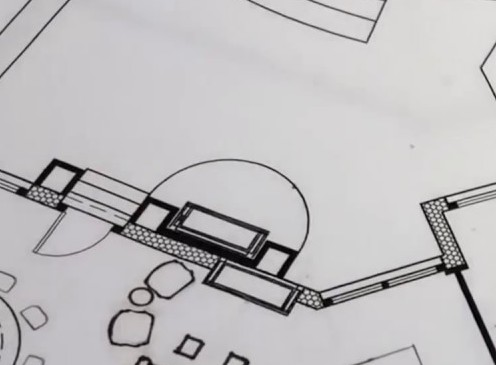
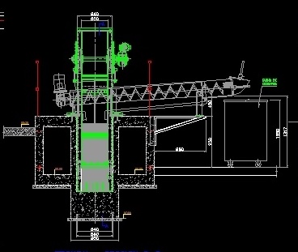

Welcome Future Architect
Definition
a. the art or science of building specifically : the art or practice of designing and building structures and especially habitable ones.
b. formation or construction resulting from or as if from a conscious act the architecture of the garden.

Architecture is both the process and the product of planning, designing, and constructing buildings or other structures. Architectural works, in the material form of buildings, are often perceived as cultural symbols and as works of art. Historical civilizations are often identified with their surviving architectural achievements.What do Architect's Do?
Architecture is one of those fields that include a wide variety of career options, owing to the several topics that fall under its domain. Architects work on scales starting from a small room in a house to an entire city. They design, develop, present, and supervise all sorts of projects. Their knowledge, design skills, and artistic sense make them capable of approaching other paths like graphic design, product design, or even game design.
An architect can opt to be a jack of all trades or just specialize, and here we give you a brief on the 7 types of architects you are likely to be one of, at some point in your career.
The Different Types of Architects
- Residential Architect
- Commercial Architect
- Interior Designer
- Green Design Architect
- Landscape Architect
- Urban Designer
- Industrial Architect
 Residential buildings have come to be seemingly identical after the standardization that followed the industrial revolution in the past century. However, some neighborhoods still enjoy the merits of beautifully customized residences, and this where Residential Architects work. They deal with clients who would like to have their own customized houses designed. They take note of their spatial and functional requirements; then they start to design the plans, layouts, and elevations. They estimate the costs of materials and services, as well as the time needed to complete the construction and finishing.
Residential buildings have come to be seemingly identical after the standardization that followed the industrial revolution in the past century. However, some neighborhoods still enjoy the merits of beautifully customized residences, and this where Residential Architects work. They deal with clients who would like to have their own customized houses designed. They take note of their spatial and functional requirements; then they start to design the plans, layouts, and elevations. They estimate the costs of materials and services, as well as the time needed to complete the construction and finishing.
A well-designed building is aesthetically pleasing as well as functional, and the functionality varies according to the type of space that is being designed. A successful design of a commercial or public building is highly dependent on a flowing and self-guiding circulation that optimizes the experience for the building users. For example, a well-designed shopping mall lets the buyers find their way and get what they need easily, without getting lost or walking more than they should. Commercial Architects are supposed to make that happen. They specialize in non-residential buildings, and this specialization requires engineering, construction, and artistic skills. It also requires full awareness of building codes, safety regulations, and construction costs.
Designing and styling the interior of an apartment, an office, or a restaurant requires artistic sense and technical knowledge. Interior Designers have a deep knowledge of materials, fabrics, colors, and the basics of furniture design. Some architects prefer to work on a large scale and not to get involved with such details, while others, like the pioneer Frank Lloyd Wright, prefer to do interior design for their own projects.
With the recent changes in climate and the remarkable decline in non-renewable energy resources, the role of Green Design Architects has become essential. Green Design Architects are responsible for making eco-friendly and energy-efficient architectural designs. They continuously work on innovating effective green design methods that leave a minimal impact on the environment. These architects should be knowledgeable in fields like aerodynamics, sun, and shading, as well as properties of materials.
Landscape architecture is concerned with outdoor spaces like parks, gardens, neighborhoods, campuses, and public spaces. Landscape architects design these spaces to be efficient, engaging, and harmonious with the environment. They decide the locations for buildings, walkways, greenery, and other hardscape elements accordingly. Landscape architects also choose the materials for the walkways and the types of trees and shrubs for the green areas, and so they need to have a background in the science of urban horticulture. They should be aware of the suitable materials and plants for different climates and uses.
Urban Design is a broad subject that employs other specializations like building architecture, landscape design, and green design. It deals with the scales of neighborhoods, districts, and cities. Urban designers are in charge of grouping buildings, designing nodes, paths, and street networks. So, they give the city its shape and sense of order. They can design cities from scratch or develop existing ones. Urban designers additionally face a wider range of issues that have to do with the economy, politics, and culture. They, also, have to be in touch with the communities they serve who are their actual clients.
The architecture of an industrial facility can be vital to its functionality. They need a suitable envelope that aids the flow of the industrial process taking place inside, and that is what Industrial Architects specialize in. They fully understand the different industrial processes, and accordingly, design efficient and functional buildings that can hold them.
About B.Arch
B.Arch (Bachelor of Architecture) is an undergraduate degree in the field of architecture. This five-year full-time programme is a blend of theoretical and practical knowledge for students to learn the art of planning, designing and constructing physical structures of various kinds. From ideating to mapping and overseeing the construction, a qualified architect is involved at every stage of any construction project.
 To become an architect, interested candidates need to have a rational and artistic bent of mind along with problem-solving abilities. The career scope of BArch graduates in India is tremendous with the flourishing construction sector. A qualified BArch graduate has the option to choose their line of work from a range of areas ranging from consultants to architectural designers.
Eligiblity
The Students have 12th board degree from a recognized board. The Student should have a minimum of 50% in the 12th board.
Entrance Exam
NATA
The national aptitude test for architecture which is organised by the Council of Architecture. It is an aptitude test that an aspiring architecture student can give to get admission into architecture programmes in various colleges other than IITs and NITs. But bear in mind that unlike entrance tests for IITs and NITs, NATA is only an aptitude test and does not necessarily guarantee you admission into any college. The test consists of questions on general architecture history, geometry, shapes, materials, colour wheel etc., which in short are subjects that pertain to architecture.
JEE Main Paper 2
Conducted by the National Testing Agency (NTA), JEE Main Paper 2 is the gateway for B.Arch admissions into NITs, IIITs and GFTIs and also various private colleges.
Click here to know more about JEE Paper 2
Subject you will be learning
- Applied Climatology
- Classical & early Medieval period
- Introduction to Landscape Design
- Introduction to Urban Design
- Ancient Civilizations
- Steel Structures
- RCC Structures
- ETC.
Job Opportunities
- Project Architect
- Architecture Designer
- Interior Architect
- Urban Planner
- Design Architect
- ETC.
Top Compaines
- Architect Hafeez Contractor
- RSP Architects Ltd
- Shapoorji Pallonji & Co. Ltd.
- Kembhavi Architecture Foundation
- Christopher Charles Benninger Architects
- Oscar & Ponni Architects